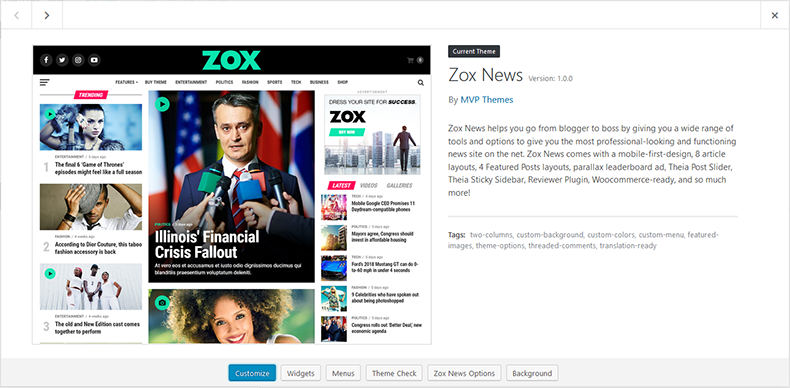
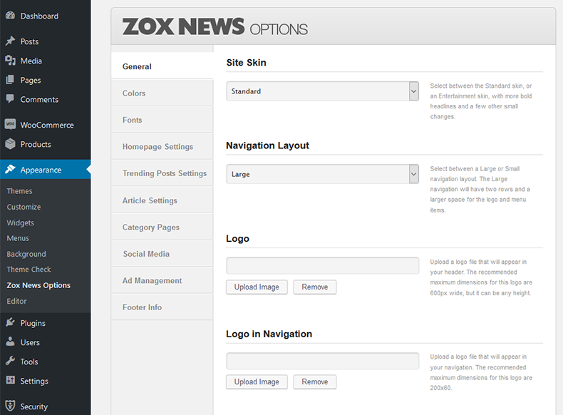
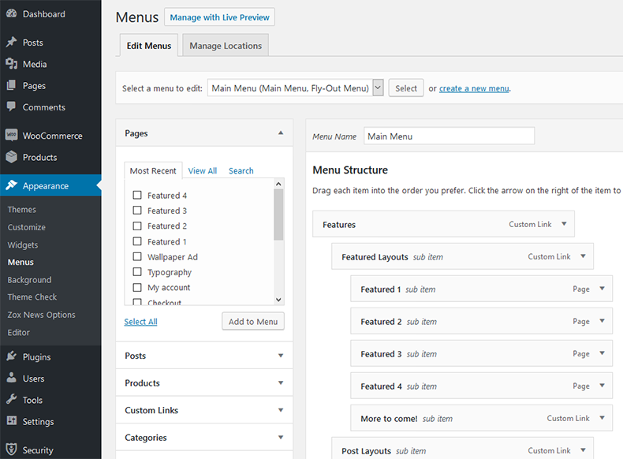
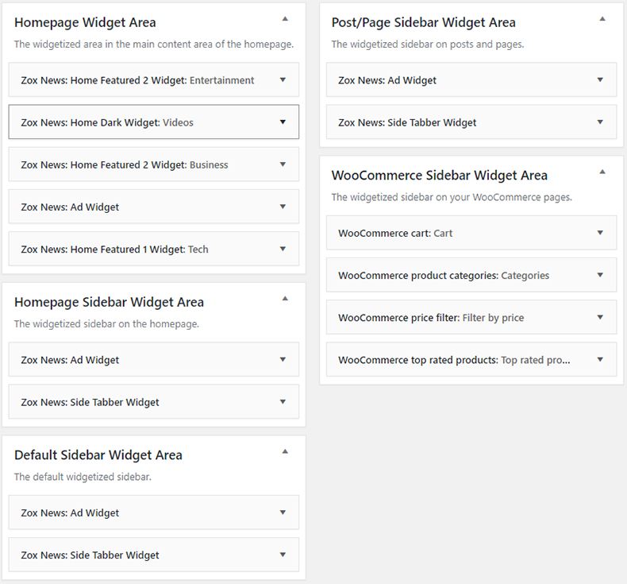
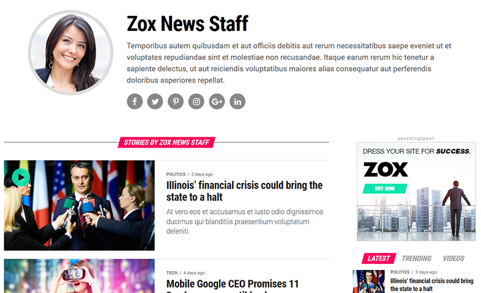

“Zox News” Documentation by “MVP Themes” v3.17.1
“Zox News”
Thank you for purchasing my theme. If you have any questions that are beyond the scope of this help file, please feel free to visit the MVP Themes Support Center here. Thanks so much!
Table of Contents
Disclaimer - top
Although support is not required of ThemeForest authors, I do offer support for the theme and its core features and functionality. I cannot guarantee that this theme will function with all third-party components and plugins. Zox News Theme is presented as is.
Installation/Homepage Setup - top
- Make sure that you have the latest version of Wordpress installed.
- You can upload Zox News to Wordpress in one of two different ways:
- Extract the zox-news.zip and upload the extracted zox-news folder to the /wp-content/themes/ directory on your FTP server.
- OR go to Appearance > Themes and click on the Add New link at the top. Then click Upload Theme and click Choose File, then select zox-news.zip and click Install Now.
- After you upload the theme, activate it by going to Appearance > Themes and place your mouse over Zox News and click the Activate button underneath.
After installing the theme, you can do one of two things: 1) Import the demo data, or 2) follow the instructions to set up the theme with the existing posts/data you have on your site.
Importing the Demo Data
- When you activate the theme, you will see a notification at the top of your WordPress Dashboard prompting you to install plugins that are included with the theme. Click the Begin installing plugins link within the notification.
- Click the check box next to the MVP Themes Social Buttons and One Click Demo Import plugins, as well as any of the other plugins you plan to use, then within the Bulk Actions dropdown menu, select Install, then click the Apply button. Your plugins should now be installed and activated.
- Go to Appearance > Import Demo Data and click the Import Demo Data button.
NOTE: The XML data does not come with the images from the demo, which are not licensed to be included in the theme file.
Setting up the theme with your existing posts/data
- When you activate the theme, you will see a notification at the top of your WordPress Dashboard prompting you to install plugins that are included with the theme. Click the Begin installing plugins link within the notification.
- Click the check box next to the MVP Themes Social Buttons as well as any of the other plugins you plan to use, then within the Bulk Actions dropdown menu, select Install, then click the Apply button. Your plugins should now be installed and activated.
- Go to Pages > Add New. Enter Home as the title and in the Page Attributes section, select Home from the Templates dropdown menu on the right. Click Publish.
- Go to Settings > Reading and select the A static page radio button and in the Front Page: dropdown menu, select Home. Click Save Changes.
- To set up the Featured Posts section of your homepage, go to Zox News Options > Homepage Settings and select a Featured Posts Layout, and assign a Featured Posts Tag Slug that is associated with the Tag you want to use for your Featured Posts. Posts with this Tag will be displayed in the Featured Posts at the top of the homepage. You can find the slug for the Tag you want to use by going to Posts > Tags and then find the Tag you want to use for the Featured Posts section and find the slug for that Tag in the Slug column. To find more information on how to find the Tag Slug, click here.
- To set up the Widgets on your homepage, you can go to Appearance > Widgets and add any widgets to the Homepage Widget Area. You can view the widget layout from the demo in the Widgets section of this documentation as well as more information about how to utilize the other widgetized areas.
- To set up your menus, please refer to the Custom Menus section of this documentation.
In order to utilize the various social media links & sharing buttons throughout the site, you will need to install the MVP Social Buttons plugin that comes with the theme. You can find the plugin (mvp-social-buttons.zip) in the /plugins folder of your original zip file you downloaded from Themeforest.

Updating the Theme - top
From time to time, a theme update will be released that either fixes a bug and/or adds new features to the theme. It is recommended that you install the Envato Market Plugin so you can easily install theme updates directly from your WordPress Dashboard with one click. However, there are two other ways you can update the theme:
- Remove the old version of the theme by going to Appearance > Themes and activating another theme (you may want to place your site in Maintenance mode via a plugin). Then, hover your mouse over the Zox News theme image and click Theme Details. Then click delete in the lower right corner of the window that appears. Then, follow the installation instructions above to install the new version of the theme.
- OR you can upload the new /zox-news folder (located in the zox-news.zip file) via FTP and overwrite the old files.
NOTE: Updating the theme will overwrite any changes you made to any of the core files (index.php, style.css, header.php, etc), however, you will not lose any changes you made to the Theme Options, menus, widgets, etc.
Also, make sure to go to your Theme Options and click "Save all changes" after each time you update the theme to make sure any new options are generated properly.
Theme Options - top
Zox News comes with custom Theme Options to allow you to set up many of the theme features without touching the code. To edit the Theme Options, go to Appearance > Zox News Options.

- General - Here, you will be able to upload your custom logo to replace the default logo, upload a custom favicon, enter any custom CSS you need, as well as toggle the responsiveness of the theme, and the Infinite Scroll feature. NOTE: Please click "Save All Changes" in the General Settings section once before you begin in order to register the default theme settings.
- Site Skin - Select between the Standard skin, or an Entertainment skin, with more bold headlines, a white background to the nav bar, and a few other small changes.
- Navigation Layout - Select between a Large or Small navigation layout. The Large navigation will have two rows and a larger space for the logo and menu items.
- Logo - Upload a logo file that will appear in your header. The recommended maximum dimensions for this logo are 600px wide, but it can be any height.
- Logo in Navigation - Upload a logo file that will appear in your navigation. This logo file will be used if you are using the Logo in Navigation logo option, as well as in the flyout menu, on mobile devices, and within the smaller menu that scrolls as you browse the site. The recommended maximum dimensions for this logo are 200x30.
- Logo in Navigation Width - If you are utilizing the Google AMP feature, you will need to enter the width of your navigation logo file here. Default is 92.
- Logo in Footer - Upload a logo file that will appear in your footer. There are no maximum recommended dimensions for this logo size.
- Custom Favicon - Upload a 16px x 16px PNG or GIF file to serve as your favicon.
- Custom CSS - Here you can enter any custom CSS code for the theme, which will overwrite any other CSS code. You will not lose any of the custom CSS in this field when you upgrade the theme to a newer version.
- Toggle Responsiveness - Toggle this box if you would like to remove responsive feature of the site that alters the site based on the device it is being viewed on. By disabling this, visitors will see the desktop version of the site no matter what device they are viewing.
- Toggle Infinite Scroll - Toggle this box if you would like to remove the Infinite Scroll feature on the homepage and archive pages.
- Toggle Megamenus - Toggle on/off the Megamenu feature for Category menu items
- Enable RTL - Toggle on/off the RTL stylesheet.
- Colors - Here, you can select which colors you would like to use for your site.
- Primary Color Skin - Select between a highlight and standard skin for the primary color. This will affect the color of the video/gallery icons and a few other color elements. If you are using a bright, highlight color like the default green that you see in the demo, choose highlight. If you are using a more standard color, choose standard.
- Primary Theme Color - Select or enter a hexidecimal code for the primary color of the site.
- Primary Theme Color - Select or enter a hexidecimal code for the secondary color of the site.
- Top Navigation Background Color - Select or enter a hexidecimal code for the background color of the top navigation bar.
- Top Navigation Icon Color - Select or enter a hexidecimal code for the hamburger menu and search icons in the top navigation.
- Top Navigation Icon Hover Color - Select or enter a hexidecimal code for the hover color of the hamburger menu and search icons in the top navigation.
- Top Navigation Skin - Select between a dark and light top navigation skin. This will affect the color of the social media buttons and fly-out menu text color.
- Bottom Navigation Background Color - Select or enter a hexidecimal code for the background color of the bottom navigation.
- Bottom Navigation Text/Icon Color - Select or enter a hexidecimal code for the text/icons in the bottom navigation.
- Bottom Navigation Text Hover Color - Select or enter a hexidecimal code for the hover/underline of the text/icons in the bottom navigation.
- Primary Link Color - Select or enter a hexidecimal code for the underline and highlight color for posts and pages.
- Unstyled Link Color - Select or enter a hexidecimal code for unstyled default link color for links throughout the site.
- Fonts - Here, you can select from over 700 Google Fonts to set the various fonts for your site. You can browse the list of Google Fonts here. You can also enter standard web fonts like Arial and Georgia as well.
- General Content Font - Enter the font name for the general font for the content on all pages.
- Paragraph Font - Enter the font name for the paragraph font for all pages.
- Fly-Out Menu/Top Navigation Font - Enter the font name for the fly-out and bottom navigation menus.
- Featured Posts/Article Headline Font - Enter the font name the font for the headlines in the Featured Posts section and other headlines throughout the site.
- Article Title Font - Enter the font name the font for the title of posts on article pages.
- General Heading Font - Enter the font name the font for the general headings that appear at the top of the different sections around the site.
- Homepage Settings - This is where you will be able to configure the various homepage settings, including the Featured Posts section.
- Show Featured Posts? - Uncheck this box if you would like to remove the Featured Posts section from the homepage.
- Featured Posts Layout - Select between 4 different layouts for your Featured Posts section on the homepage.
- Featured Posts Tag Slug - Enter the Tag Slug of the Tag you want associated with the Featured Posts section. Posts with this Tag will be displayed in the Featured Slider at the top of the homepage. You can find the slug for the Tag you want to use by going to Posts > Tags and then find the Tag you want to use for the Featured Posts section and find the slug for that Tag in the Slug column. To find more information on how to find the Tag Slug, click here.
- Featured Posts Ad Code - If you are using Featured Posts #1, you can insert a 300x250 ad that will appear at the top of the right column. Enter your ad code (Eg. Google Adsense) for that area.
- Homepage Body Layout - Select your layout for the body of the homepage that will appear in the main content area of the homepage.
- Homepage Blog Layout - Select between Row and Columnn for the layout of the blog section of the homepage.
- Number of Posts Per Page - Set the number of posts per page that you want displayed on the Homepage Blog and the Latest News Template.
- Trending Posts Settings - Here you can change the settings for the Trending Posts sections that appear within the Featured Posts section as well as the Trending section at the bottom of posts.
- Trending Posts Heading - Enter the heading of the Trending Posts section that will appear in the Featured Posts sections that utilize the Trending Posts feature.
- Trending Posts Days - Number of days to use for Trending Posts. Only posts published within this length of time will be displayed in the Trending Posts section. For example, if you set the number to 30, only posts that were published in the last 30 days will be used for the Trending Posts sections.
- Article Settings - Here you can toggle the display of featured images, social sharing buttons, author info, and the previous/next story section on all posts.
- Default Post Template - Select between 8 different default Post Template layout for your articles. This is the universal setting and will be used as the default for new posts as well as any posts that do not have a Post Template assigned in the post individually.
- Show Featured Image In Posts? - Uncheck this box if you would like to remove the featured image from automatically displaying in all posts.
- Show Social Sharing Buttons? - Uncheck this box if you would like to remove the social sharing buttons from all posts.
- Show Post Info? - Uncheck this box if you would like to remove the author/post info from the top of posts.
- Show Author Box? - Uncheck this box if you would like to remove the author box from the bottom of your posts.
- Show Related Posts? - Uncheck this box if you would like to remove the Related Posts from the bottom of your posts.
- Number of Related Posts - Set the number of posts that you want displayed in the Related Posts section on your posts.
- Show Teaser Posts? - Uncheck this box if you would like to remove the More Posts from the bottom of the posts.
- Number of Teaser Posts - Set the number of posts that you want displayed in the More Posts section on your posts.
- Show Trending Posts? - Uncheck this box if you would like to remove the Trending Posts from the bottom of your posts.
- Show Previous/Next Post Links - Uncheck this box if you would like to remove the links to the previous/next posts that appear in the left/right margins of larger resolution screens.
- Toggle Scrolling Video - Uncheck this box if you would like to remove the scrolling fixed video function on video posts.
- Disqus Forum Shortname - If you want to use Disqus as your commenting system, you do not need to install the Disqus plugin. All you need to do is enter your Disqus Forum Shortname in order to activate Disqus on your site. This is the unique identifier for your website in Disqus (i.e. yourforumshortname.disqus.com). Only enter the Shortname and not the full URL.
- Article Ad Code - Enter your ad code (Eg. Google Adsense) for the ad area below the article. The maximum width of this area is 740px, but it can be any height.
- Article Ad Code - Enter your ad code (Eg. Google Adsense or Taboola) for the ad area below the article. The maximum width of this area is 1083px, but it can be any height.
- Auto Load Posts Settings - Jawn comes with a custom Auto Load Posts function that loads the next post as the user scrolls to the bottom of the current post. You also have the option of displaying the current and next posts in the left column that will update as you scroll to the next posts. You will need to make sure you have installed the Jawn Auto Load Posts plugin that comes with the theme.
- Toggle Auto Load Posts - Toggle on/off Auto Load Posts feature.
- Auto Load Posts Sidebar Layout - Select between displaying the latest posts (within the same category as the current post) in the left column, displaying a widgetized sidebar on the right, or not displaying any sidebar at all.
- Number of Auto Load Posts - Set the maximum number of Auto Load Posts. This number of posts will be loaded in the sidebar when the page loads.
- Auto Load Posts Sidebar Ad Code - If you are using the Latest option for the Auto Load Posts Sidebar Layout, you can enter your ad code (Eg. Google Adsense) for the ad area in the Auto Load Posts sidebar. The maximum width of this area is 330px, but it can be any height. The area was designed to ideally display 300x250 or 300x500 ads.
- Google AMP Settings - Here, you can configure your Google AMP Settings.
- Enable Google AMP on mobile devices - Check this box if you would like to enable the Google AMP compatibility with the theme. You will also need to install and activate the AMP plugin that comes with the theme.
- Facebook App ID - In order to utilize the Google AMP Facebook share button, you must provide a valid Facebook App ID.
- Category Pages - Here, you can configure the layout of your category pages.
- Show Featured Posts? - Uncheck this box if you would like to remove the Featured Posts section from the top of your category pages.
- Featured Posts Layout - Select the layout of your Featured Posts section on the category pages.
- Archive Blog Layout - Select the layout for the blog section of your category and archive pages.
- Social Media - Here you can enter URLs for several popular social media sites to activate links to each page that will appear in a floating box on the right of the browser window. Simply enter the URL and the link will appear automatically!
- Ad Management - Enter ad code for the optional leaderboard banner areas and/or a wallpaper ad.
- Toggle Parallax Leaderboard - Uncheck this box if you would like to remove the parallax leaderboard feature and display a static leaderboard ad.
- Header Leaderboard Ad Code - Enter your ad code for the leaderboard ad area that will appear at the top of the site. You can place any size ad in this section.
- Wallpaper Ad Image URL - Enter the URL for the wallpaper image (i.e. http://www.xyzdomain.com/xyz-wallpaper.jpg). Please do not insert the actual ad code for the wallpaper ad, just the image URL. The recommended width of the wallpaper ad is a minimum of 1400px. The recommended height is a minimum of 600px. NOTE: Due to the nature of wallpaper ads, the content of the site will sit on top of the ad and cover up the middle 1200px of the ad. The only visible area will the the left and right margins of the image which is why the ad should be wider than 1200px.
- Wallpaper Ad Click-Through URL - Enter the URL that users will be taken to if they click on the Wallpaper Ad.
- Footer Options - Enter your information for the Footer Info Box.
- Copyright Text - Here you can enter any text you want (eg. copyright text).
Zox News supports three custom menu sections: a Main Menu for the top navigation bar that will only be visible on desktop devices, a Fly-Out Menu that will slide out from the right and will be used on all devices, and a Footer Menu that will appear at the very bottom of your site.
To set up the menus, go to Appearance > Menus. Here, you can create a new menu by clicking the create a new menu link, give the menu a name, and click Save Menu button. You will then see a Manage Locations tab appear at the top of the screen. Click the Manage Locations tab and then select your newly created menu from the dropdown list of the menu location you would like to set up and click Save Changes. You are now able to create a custom link, page or category and add it to your new menu by clicking the Add to Menu button.
If you would like to add a "Home" button, you can do so by adding a "Custom Links" menu item. Enter the URL of your site as the URL and "Home" as the Link Text.
For more information on how to use the Wordpress custom menu feature, click here.

Zox News comes with 7 custom widgets for use in 5 different widget areas: Homepage Widget Area, Homepage Sidebar Widget Area, Default Sidebar Widget Area, Post/Page Sidebar Widget Area, and the WooCommerce Sidebar Widget area if you are using the WooCommerce plugin. To activate the widgets, go to Appearance > Widgets and click and drag a widget from the Available Widgets section and drop it into any of the 8 different custom widget areas.
Widget Areas:
- Homepage Widget Area - This is where you can place your widgets that will appear in the main content area of the homepage.
- Homepage Sidebar Widget Area - This is where you can place your widgets that will appear in the sidebar of your homepage.
- Default Sidebar Widget Area - This is where you can place your widgets that will appear in the sidebar of any page on your site other than the homepage, a post/page, or a Woocommerce page.
- Post/Page Sidebar Widget Area - This is where you can place widgets that will appear in your Posts/Pages.
- WooCommerce Sidebar Widget Area - If you are using the WooCommerce plugin, this is where you can place the custom WooCommerce widgets that will appear in the sidebar of your WooCommerce pages.
Available Widgets:
- Zox News: Ad Widget - A widget that displays any sized ad. If you want to place a 300x250 ad in your sidebar, simply place it in one of the sidebar widget areas and then enter your ad code. You can also use this ad to display a leaderboard ad in the Homepage Widget Area.
- Zox News: Facebook Widget - A widget that displays a Facebook Like Box. You can customize the title header, your Facebook page URL, and a few other options to help customize the Like Box to your liking.
- Zox News: Flexible Posts Widget - A widget that displays any number of posts within any widget area.
- Zox News: Home Dark Widget - A widget that displays a list of either gallery or video posts with a dark background. This widget is designed specifically for the Homepage Widget Area.
- Zox News: Home Featured 1 Widget - A widget that allows you to either display 2 large posts in a row, 4 smaller posts in a row, or both at the same time. This widget is designed specifically for the Homepage Widget Area.
- Zox News: Home Featured 2 Widget - A widget that displays one large featured post, two smaller featured posts, and a sidebar with more posts and an optional 300x250 ad. This widget is designed specifically for the Homepage Widget Area.
- Zox News: Side Tabber Widget Widget - A widget that displays your latest posts, popular posts, and video posts in a tabber widget. This widget is designed specifically for the Sidebar Widget Areas.

Images - top
Zox News supports retina-ready images. To utilize this feature, follow these instructions:
- Create a second image that is twice the size of your existing image. For example, if your logo is 200x30, your retina image would need to be 400x60.
- Add @2x to the end of the name of the retina image. For example, if your logo is called logo.png, name your retina version logo@2x.png.
- Upload the retina image in the same directory as your non-retina image. For example, if your logo is located in /wp-content/themes/zox-news/images/, you must upload the retina image in this directory.
- That's it!
Zox News utilizes Wordpress' built-in Featured Image feature to handle image management. The recommended size for images to show properly within posts and in the Featured Posts area on the homapage and category pages is 1000x600px. If you plan on using a different image size, it is recommended that you use image dimensions that are proportional to the 1000x600 recommended dimensions (i.e. 500x300 or 660x400).
To set the featured image for a post, go to Posts > Add New (or edit an existing post) and click the Upload/Insert icon above the main text box. From here, choose a file and upload it. Once it is uploaded, click Use as featured image located near the bottom of the Add Media window. Then click Save all changes, close the Add Media window and you're good to go! Zox News will take care of the rest in generating the smaller thumbnails that show up in the various places around the site.
Background - top
Zox News utilizes Wordpress' built-in Custom Backgrounds feature to set up your custom background color and/or image. For more information on how to set up your custom background, click here.
Post Options - top
Zox News gives you a variety of custom options for your posts, inlcuding a custom Image Gallery, a Featured Headline feature, and the ability to set a full-width posts.
- Post Formats - Zox News comes utilizes WordPress' built in Post Formats feature where you can select the type of post you are creating. For example, if you have a video in the post, you should go to the Format box and select the Video radio button, which will activate the video icon overlay on posts throughout the site that will show visitors that there is a video in the post.
- Video/Audio Posts - Zox News allows you to replace the default Featured Image in posts with an embedded video or audio clip. To utilize this feature, go to Posts > Add New (or edit an existing post) and enter your embed code (HTML or Javascript) in the box titled Video/Audio Embed.
- Featured Headline - Zox News allows you to enter a separate, smaller headline for use in the Featured Posts area on the homepage, in certain widgets, and in on category pages. To utilize this feature, go to Posts > Add New (or edit an existing post) and enter your featured headline in the box titled Featured Headline.
- Featured Image Excerpt - You can add a custom excerpt (that will appear below the main title on your posts) within the Post Edit screen. At the top right corner, click "Screen Options" and make sure "Excerpt" is checked and then scroll down to the Excerpt box and enter your own custom excerpt that will take the place of the default text. This text will also appear around the site where excerpts are used (i.e. in widgets and archive pages).
- Featured Image Caption - Zox News allows you to enter a caption (which can also be used as a photo credit) for your Featured Images within posts. This will be displayed just below the featured image. To utilize this feature, go to Posts > Add New (or edit an existing post) and enter your photo credit in the box titled Photo Credit. You can also use HTML in this space.
- Post Template - Select between 8 different Post Templates. To utilize this feature, go to Posts > Add New (or edit an existing post) and select a layout from the dropdown box in the Post Template section on the right sidebar.
- Show/Hide Featured Image - Zox News allows you to remove the featured image from individual posts. To utilize this feature, go to Posts > Add New (or edit an existing post) and select "Hide" from the dropdown box in the Featured Image Show/Hide section on the right sidebar.
- Custom Post Gallery - Zox News allows you to display a custom rotating image gallery in your posts. To utilize this feature, go to Posts > Add New (or edit an existing post) and select "Show" from the dropdown box in the Post Gallery Show/Hide section on the right sidebar. To add images to the gallery, by clicking the Add Media button above the main text box, then click the Upload Files tab and upload the images you want to include in the Image Gallery. You do not need to insert the images into the post, so once you upload the image(s), they will appear in the gallery for that post. So, once the image(s) are uploaded, you can close the Insert Media screen by clicking on the X in the upper right corner, then you can save/publish your post and the Image Gallery will appear at the bottom of your post.
Page Templates - top
Zox News comes with 4 custom page templates: Home, Authors List, Latest News, Full-Width. In order to create a custom page template
- Go to Pages > Add New. Enter a title in the Enter a title here box.
- In thePage Attributes section, select the page template you want to use from the Templates dropdown menu on the right.
- Click Publish and that's it!
Reviewer Plugin - top
Zox News comes with the Reviewer WordPress Plugin that allows you to insert reviews and comparison tables inside your WordPress blog posts and pages in a quick and easy way. Here are the instructions to install and set up Reviewer Plugin for Zox News
- Go to Plugins > Add New then click the Upload link at the top.
- Click Choose File and select the reviewer.zip file (located in the /plugins folder of your original zip file you downloaded from Themeforest), then click Install Now.
- After the plugin installs, click the Activate Plugin link.
- Once you activate the plugin you will be prompted to verify the license. You will need to enter MVPThemes (case sensitive) for the Username and 8531e88e-5fcb-4a59-a6a3-72bc6c11b74f for the Purchase Code.
If you run into any technical issues with the plugin, please submit a ticket at the Support Center and I will get in touch with the plugin developer. But, for help in setting up the plugin and any general questions about the plugin, please refer to the plugin's documentation, by clicking here
Theia Post Slider - top
Zox News utilizes Theia Post Slider to give you dynamic slideshows in your posts and pages. Here are the instructions to install and set up Theia Post Slider for Zox News:
- Go to Plugins > Add New then click the Upload link at the top.
- Click Choose File and select the theia-post-slider.zip file (located in the /plugins folder of your original zip file you downloaded from Themeforest), then click Install Now.
- After the plugin installs, click the Activate Plugin link.
- To activate the plugin, go to Settings > Theia Post Slider and enter sk_>[FTGcWU^o}E+[x:ZfOgLGTk>#71h as the Purchase Code, then click Save.
Theia Post Slider uses Wordpress' built-in "Page Break" feature to split up each slide in the slideshow. Simply click the "insert page break" shortcode button or manually insert <!--nextpage--> to insert a page break, which will split your post into different pages/slides.
To customize Theia Post Slider to your liking, you can edit the slider settings by going to Settings > Theia Post Slider. Click here for the full documentation for Theia Post Slider.
Zox News utilizes Theia Sticky sidebar to allow sidebar content to stay stay visible within each section as you scroll down the page. Here are the instructions to install and set up Theia Sticky Sidebar for Zox News:
- Go to Plugins > Add New then click the Upload link at the top.
- Click Choose File and select the theia-sticky-sidebar.zip file (located in the /plugins folder of your original zip file you downloaded from Themeforest), then click Install Now.
- After the plugin installs, click the Activate Plugin link.
To customize Theia Sticky Sidebar to your liking, you can edit the slider settings by going to Settings > Theia Sticky Sidebar. Click here for the full documentation for Theia Sticky Sidebar.
Once you are in the Theia Sticky Sidebar Settings (Settings > Theia Sticky Sidebar), you will need to go to the General tab, enter a name for your sidebar, then enter the following into the Sidebar CSS Selector box: #mvp-side-wrap,.mvp-feat1-right-wrap,.mvp-post-soc-wrap,.mvp-flex-side-wrap,.mvp-alp-side. Click Save Changes.
Then, in the Sidebar additional top margin (px) box, you will need to enter a value of 120. In the Sidebar additional bottom margin (px) box, you will need to enter a value of 20. In the Minimum width (px) box, you will need to enter a value of 1004. Click Save Changes. That's it! Your sidebars should now be sticky throughout your site!
Author Info - top
Zox News allows you to display information about the author on each post. You can enter/edit this information by going to Users > All Users and editing any of your existing users.
- Author Description - You can enter an author description via the author's user profile in the Biographical Info section. This description will show up on the author's individual author page as well as the author list page.
- Author Avatar - Zox News utilizes Gravatar to display the author's avatar in the author info below each post. Please sign up at Gravatar.com with the email address you are using with the author on your site. Once you have associated an avatar with this email, this avatar will appear in the author info as well as in the comments section of the site.
- Author Social Profiles - To enter social profile for each author, you will need to install the MVP Social Fields plugin that comes with the theme. You can find the plugin (mvp-social-buttons.zip) in the /plugins folder of your original zip file you downloaded from Themeforest. Once you have installed the plugin, you can enter the URLs in the user's profile for each of the popular Social Media sites in order to activate the social buttons that will appear on the author page and the author list page.

Translation Files - top
Zox News comes translation-ready with .po/.mo files ready for translation. These files are located in the /languages folder of the main theme folder. Once you have translated the files, simply save them as the name of your language code (i.e. es_ES.po and es_ES.mo for Spanish) and place them back in the /languages folder.
For more information on how to utilize these files to translate this theme into another language, click here and start with Step 2.
WooCommerce - top
Zox News is fully compatible with the popular e-commerce plugin WooCommerce, which will allow you to create a store within your site. You can download WooCommerce here. Once you have downloaded the plugin, follow these instructions to install the plugin with Wordpress:
- Go to Plugins > Add New
- Select the Upload link at the top.
- Click Choose File and select the woocommerce.zip file that you downloaded, then click Install Now.
Once the plugin is activated, WooCommerce will need to install several pages in order for it to function properly. Click here for more information about setting up WooCommerce.
bbPress - top
Zox News is fully compatible with the popular forum plugin bbPress, which will allow you to add a forum to your site. You can download bbPress here. Once you have downloaded the plugin, follow these instructions to install the plugin with Wordpress:
- Go to Plugins > Add New
- Select the Upload link at the top.
- Click Choose File and select the bbpress.xxx.zip file that you downloaded, then click Install Now.
Click here for more information about setting up bbPress.
CSS Files - top
- style.css - Main theme stylesheet
- iecss.css - Stylesheet with code for IE8 and earlier version browsers.
- media-queries.css - Stylesheet with the responsive CSS utilizing Media Queries.
- reset.css - The goal of a reset stylesheet is to reduce browser inconsistencies in things like default line heights, margins and font sizes of headings, and so on.
Javascript Files - top
- /js/flexslider.js - Used for the Custom Gallery feature in posts.
- /js/jquery.infinitescroll.js - Used for the Infinite Scroll feature that continually loads posts without having to click to the next page (like Facebook or Buzzfeed).
- /js/mvpcustom.js - Used for various custom Javascript functions associated with the theme.
- /js/retina.js - Used for the retina-ready images feature.
- /js/scripts.js - Used for various custom javascript functions for use in the theme.
Support - top
If you have any questions related to setting up the theme that are not covered in this documentation or if you encounter any technical bugs, please submit a ticket at the MVP Themes Support Center. Please note that this theme is sold "as-is" and any additional custom modifications you would like to make to the theme are your responsibility.
Sources and Credits - top
I have used the following images or other files as listed.
Once again, thank you so much for purchasing this theme. As I said at the beginning, I'd be glad to help you if you have any questions relating to this theme. If you have a more general question relating to the themes on ThemeForest, you might consider visiting the forums and asking your question in the "Item Discussion" section.
MVP Themes
Go To Table of Contents